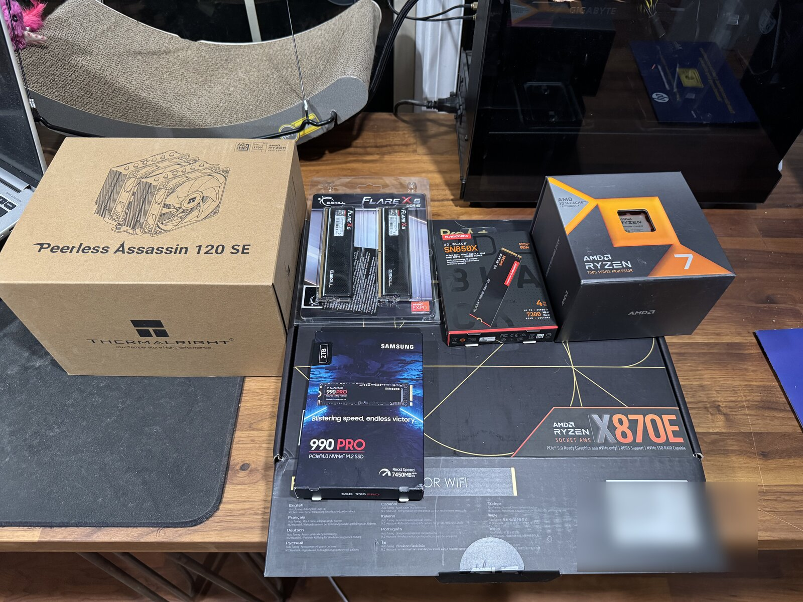
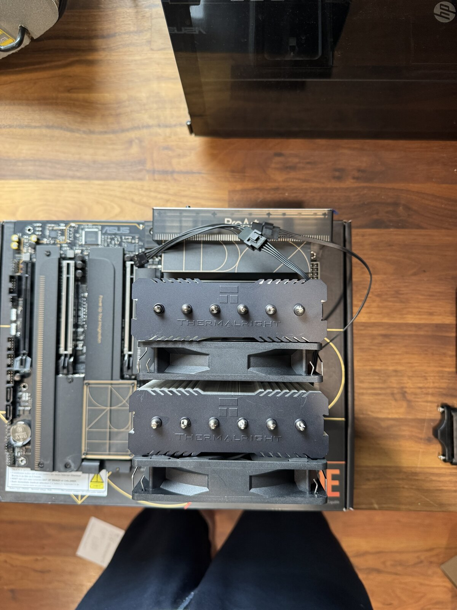
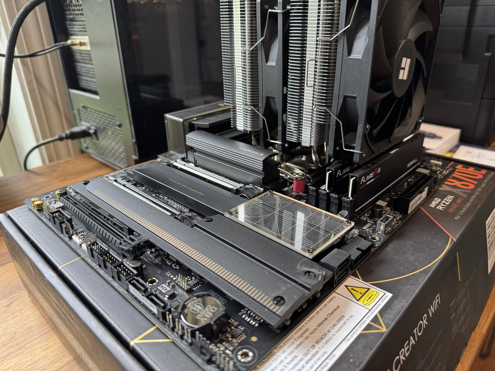
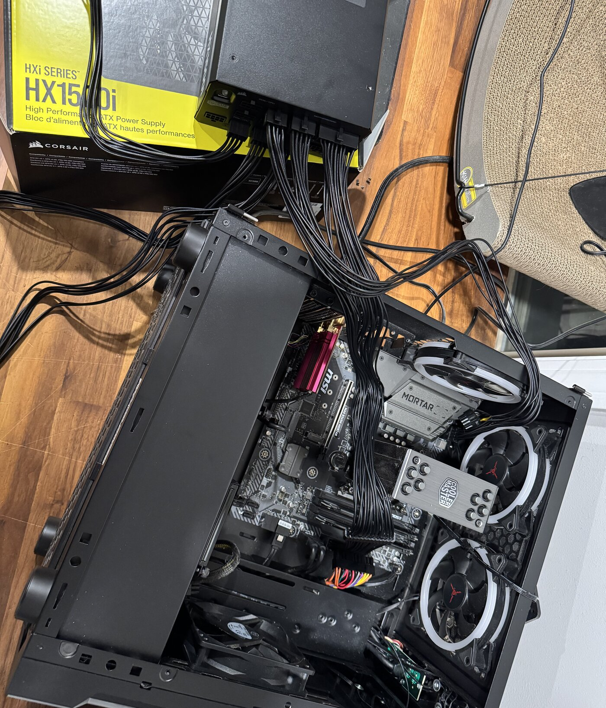
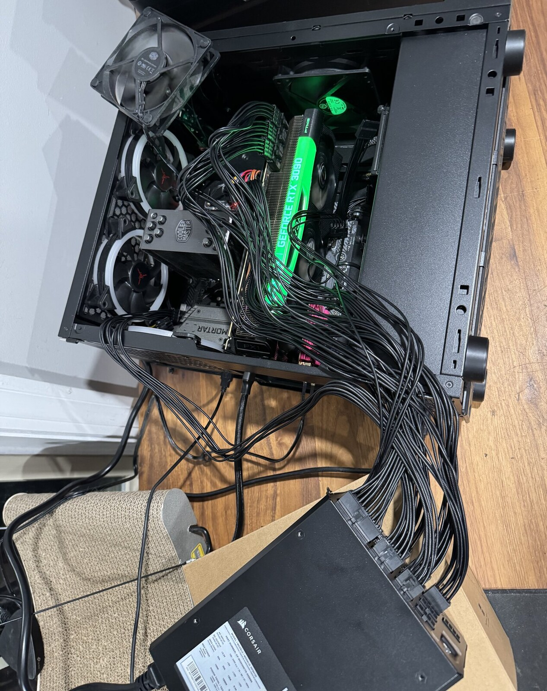
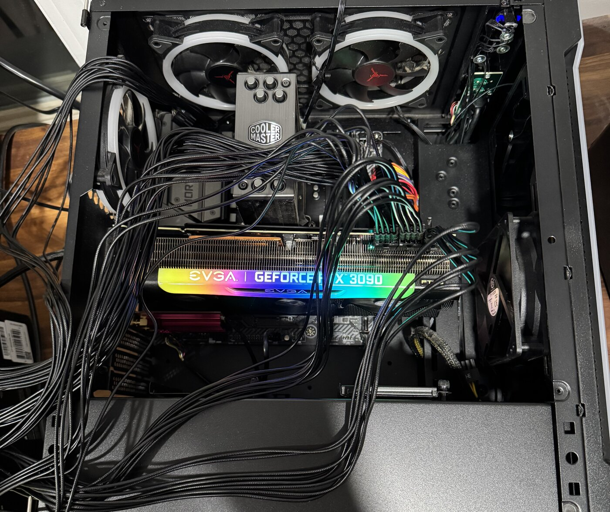
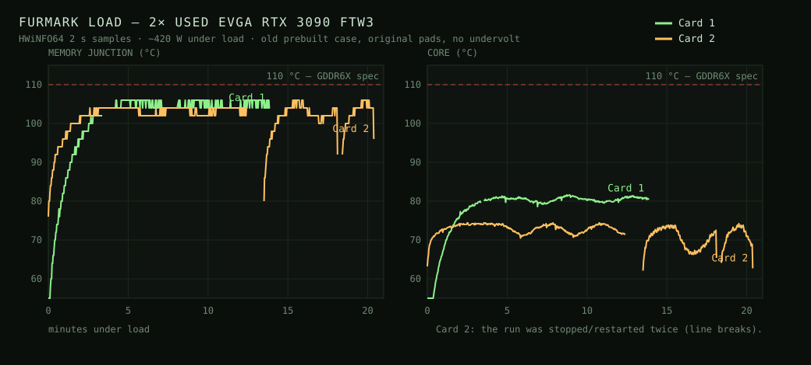

Everything that isn't wood — AI projects, cartoons, crypto, and whatever
else I'm deep-diving on this month.
01
Young George - cartoon in development
animated series · in developmentONGOING
Drafting a theme song, storyboard, pilot, and everything else you would expect. On the tech side, using hermes agent to stand up a server and rent gpu to download minimax h3 and locally generate videos.
Formatanimated series
Theme"No Cap"
Statusin the weeds
02
This website
personal websiteONGOING
I think this site will be permanently under construction.
StatusUnder construction
03
Lazy Website
macOS app · website editorSEP 2026
Built a macOS app to update this website without opening the HTML or running Git commands. Write an entry, add photos, preview it, and publish from one window.
Add new entries or edit existing ones without digging through files
Import photos, including iPhone HEIC images, and turn them into website-ready JPGs
Keep drafts private and preview changes before publishing
Check that the live page actually matches what was published
Part 2 of the build - both cards passed the bench test, which meant the gamble turned into a build. I had never built a computer before this one, so most of what's below is me learning something the hard way and writing it down..maybe someone else can use it.
The order I did things in: assemble it on the motherboard box first, before anything goes near the case. CPU in the socket, memory in the two slots the manual actually names, both drives, the cooler, one graphics card. Then power it on sitting on the box. If something's wrong you find out on a table instead of after a day of cable management.


It came up. Then the BIOS: EXPO on so the memory isn't sitting at its safe default speed, and the integrated graphics forced on, because I want the desktop coming off the processor and both 3090s doing nothing but compute.
Then everything into the case, powered on again, and Linux. One trap worth knowing: the drive names under Linux are just enumeration order — nvme0n1 and nvme1n1 say nothing about which drive is which. Size is the only reliable tell. I photographed the screen and read the list back before selecting anything, because the drive I was about to erase was the wrong one.

Ubuntu 26.04.1 on the 2 TB drive, the 4 TB deliberately left empty and then formatted as the model drive. ComfyUI on Python 3.14 and PyTorch 2.14 with CUDA 13. I skipped the CUDA toolkit on purpose — nothing needed it, and the metapackage drags in about 2.4 GB of GUI tools and profilers.
Then the models. About 214 GB of them, and two lessons:
The first download script died silently, six and a half hours in. Each stage waited for the stage before it to print a particular line — and that line never came. No error, no progress, load average zero. It looked exactly like a job that was still working. The rewrite checks things you can actually measure (does the file exist, is its size byte-for-byte what the server says) and logs a failure and moves on, so one bad file can't stall the other thirty-seven.
It downloaded at around 8 MB/s. Not the connection — the board's 10-gigabit port had negotiated 100 Mb/s with whatever is on the other end of that cable. Still on the list to chase down.
What it does now. A 1024×1024 image takes 12 seconds; native 2048×2048 takes 82. Peak draw is 419 W. Then video, which is the entire reason for the machine: a 5-second clip at 832×480, fast path, in 105 seconds. The same clip on my Mac's GPU had taken about 70 minutes. The slower higher-quality path takes 15.7 minutes, and the model that generates video together with synchronized audio does a 5-second clip in about 5 minutes.
The uncomfortable part is temperature. On Windows, HWiNFO reads the GDDR6X memory junction. On Linux, NVIDIA's driver only exposes core temperature. On the bench, the second card hit 106 °C at the memory junction while its core read 74 °C. So the one number that decides whether these cards are safe to run flat out is the number this machine cannot see. Undervolting both cards is the plan, and until then I don't run it unattended for long stretches.
Two more things I didn't know going in:
ComfyUI does not pool memory across two cards. Two cards means two jobs, not one bigger job. The intended split is video on one card and a language model resident on the other.
The 4-bit format is Blackwell-only. These are Ampere cards. The 8-bit path works fine, but it's emulated in software on this generation — it costs nothing extra, it just doesn't buy any speed.
What's left: the second card into the second slot, which is blocked on one more power cable — each of the three connectors on a 3090 wants its own cable, and the supply only ships with five. Then the panels back on, an undervolt, a long soak test, and wake-on-LAN, because the alternative is leaving a machine in the basement drawing about 100 W forever.
Not finished. But the thing it was built for went from over an hour a clip to under two minutes, and everything after this is tuning. Shout out my Hermes agent for the help!!
ProcessorAMD Ryzen 7 7800X3D · ASUS ProArt X870E-Creator
Memory64 GB DDR5-6000 (EXPO on)
Storage2 TB NVMe system · 4 TB NVMe for models
OSUbuntu 26.04.1 · NVIDIA driver 595.91.07
RenderingComfyUI 0.37.0 · PyTorch 2.14 (CUDA 13)
Statuscard 1 running · card 2 still boxed
05
Dual RTX 3090 build (48GB)
used GPUs · 48GB VRAM · local AISEP 2026
The plan is two used RTX 3090s — 48GB, and nothing else gets you that much VRAM for anywhere near the money. The rest of the machine is just somewhere to put the cards.
I found both cards off eBay, used. One seller doesn't take returns, so the only thing between me and an expensive brick is eBay's 30-day window and whether I actually test the card the week it shows up. And I didn't have a PC to test a 3090 in yet. So I tested in the old prebuilt I already had (shoutout Adam) — a known-good machine, so if something's wrong it's the card and not the build.
Some of this I learned the hard way:
Test on Windows, not Linux. NVIDIA's Linux driver only exposes core temp. The GDDR6X memory junction sensor is the number that decides keep-or-return, and HWiNFO is what reads it.
The old 600W power supply can boot a 3090 but can't load-test one. The 1500W supply sat outside the case on top of its own box, cables run in over the floor.
Three separate PCIe cables. Never daisy-chain two of the eight-pins — the protection trips and it looks exactly like a dead card.



Then memtest_vulkan to check the VRAM, and a FurMark burn with HWiNFO logging every 2 seconds. Screenshots lie a little: HWiNFO's "max" column only knows what had happened by the moment you hit the button. The CSVs are the actual record, so everything below is read off the logs.

What came out of it:
Card 1 — 13.9 minutes flat out at 419 W. Core peak 81.6 °C, hot spot 95.2 °C, memory junction 106.0 °C. Memory clock pinned at 1219 MHz the whole run, never throttled. Fans maxed at 100% / 3033 RPM. memtest_vulkan: passed.
Card 2 — 19 minutes at 405-419 W. Core peak 74.4 °C, hot spot 89.4 °C, memory junction 106.0 °C, memory clock also pinned, fans only needed 80% / 2394 RPM. memtest_vulkan: passed.
Card 2 runs about 7 °C cooler on the core at the same wattage, and it does it with a lot less fan. Same card model, same case, same test — so Card 1's cooler and paste are the weaker of the two. But both memory junctions land on exactly 106.0 °C, and that says the memory temps are being set by the case they're sitting in, not by the individual cards. Warm, but inside Micron's 110 °C spec for GDDR6X, and neither card ever dropped its memory clock, which is the part I actually care about.
So both are keepers, and now it's a build. The two cards are 2.75 slots each and end up about 5mm apart in the case, so undervolting both (~850 mV) is the next thing, before I get fancy about anything else.
Cards2× EVGA RTX 3090 FTW3 Ultra (used)
VRAM48 GB total · 2 × 24 GB GDDR6X
Forlocal open-weight video models
Verified withmemtest_vulkan + FurMark
Statusboth passed — building the rig
06
Forge Lab
macOS app · studio for the rigSEP 2026
The rig runs ComfyUI, which has a web interface. That's fine if you enjoy thinking in node graphs. I wanted buttons. So this is a small macOS app that talks to the rig over the network — no terminal, no graphs, no screen sharing.
The parts that earned their place:
Estimate before spending. Every run tells you what it will cost in time before you start it. Video on this machine ranges from under two minutes to over half an hour, so "just try it" isn't a plan.
Everything is kept. Every run is archived with its prompt and settings and can be reloaded later, so rerolling is a comparison instead of a memory test.
Image work: text to image, image editing, and background removal — one set of models, three different wirings.
Video work: text only, first frame, first and last frame, continue an existing clip, a character reference mode, and a song mode where you hand it an audio file and it lip-syncs to it.
Then the part I'd been putting off: making something longer than one shot. That gets its own window. Scenes are a queue, one row each, and each scene holds takes — reroll it or keep it, edit that one scene's prompt in place, and watch a step bar that tells you how many keepers you have. The stitch button refuses to run until every scene has one. The audio is a single continuous track laid under the whole thing rather than sliced up per scene, which is the difference between a piece of music and a stutter.
The number that shapes all of it: about 23.5 seconds of compute per second of finished video, and it stays flat no matter how long the scenes are. A three-minute piece is roughly 70 minutes of rendering either way. So the question is never how to make it cheaper — it's whether you'd rather reroll cheap short scenes, or have fewer seams to hide.
Honest limits. A piece is one engine from start to finish, because one does 16 frames a second and the other does 24 and they can't be mixed in one timeline. The sound has to be muxed on the Mac afterwards, because the rig's encoder chokes on that step. And it's a tool for one person, not a product — one window, no accounts, no sharing.
Like the other things on this page, it got built by asking for it. I describe what I want, and Hermes agent writes it while I test it by using it.
Built withHermes agent
Runsimage and video models on the 3090 rig
PlatformmacOS
Statusin use, still growing
07
Lazy Downloader (yt-dlp app)
macOS app · open sourceAUG 2026
Built a native macOS app shell around yt-dlp — the powerful open-source video downloader that handles YouTube and hundreds of other sites. Wraps the CLI in a clean GUI so there's no terminal or flags required.
Paste a URL, pick a format, and download — no command line needed
Wraps yt-dlp's full power in a friendly macOS interface
Built entirely with Hermes agent — dogfooding at its finest
The last power cable showed up and the second card went in, so the machine is finally the 48GB thing it was supposed to be. Which is where the interesting part starts, because the obvious assumption — two cards make one job faster — turns out to be wrong the way you'd actually expect it to work.
A 3090 wants three power connectors, each on its own cable, and the supply ships with five. That's the whole reason a build stalled for a week over a twenty dollar cable: five cables, six sockets. You can't daisy-chain two connectors off one cable on a card like this, so there's no clever way around it.
With both cards in, the default behaviour is that you still render one job at a time. ComfyUI doesn't pool memory across cards — two cards means two jobs running side by side, not one job going twice as fast. So out of the box, the second card does nothing for a single clip, which is the thing I actually wanted it for.
Raylight is the fix — komikndr/raylight, Apache-2.0. It's a node pack that splits a single render across both cards — divides the work up rather than running two separate jobs. Same model, same settings, it just uses both pieces of hardware on one output. Not my work and worth saying so: without it, the second card is just a spare sitting in a slot.
I measured it properly, same clip both ways, nothing else changed:
One card: 37.9 minutes
Two cards: 21.7 minutes
That's about 1.75× on a 15-second clip at 1344×768. Not double, but real.
And it is not a fixed number. On a very short run the gain was only about 1.1×; on the long clip it was closer to 1.8×. There's a fixed cost to bringing both cards into a job, and on a short clip that cost is most of the runtime, so there's nothing left to divide. The longer the clip, the closer to 2× you get. So there's no single honest number here — only "the longer, the better," which is annoying for planning and exactly why the app quotes a time before you commit instead of after.
Two things I'd rather know now than discover later:
The same seed does not give you the same video across card counts. One card and two cards produce visibly different pixels from identical settings — the same shot, not the same frame. So this is a decision you make before a take, not a way to speed up a take you already like.
It held about 21GB per card after it finished. Idle, nothing running, cards nearly full — which means the next render would have run out of memory. I found that by looking at the machine after a run rather than by reading the code, and it was one setting. Fixed, but it would have looked like a broken card.
The rest of the tuning: card 1 is capped at 300 W because it runs hotter than card 2 at the same wattage, and both got a small clock offset. Memory clock sat on the same value the entire run and never throttled, which is the part I actually care about.
What I still can't see: on Linux NVIDIA's driver doesn't expose the memory junction temperature, which is the number that decides whether a 3090 is running safely. On Windows it reads fine. So both cards run on the margin an undervolt buys rather than on a measurement, and I still don't run it unattended overnight.
Not finished. But a clip that was 37 minutes is 21, and the thing it was built for is fast enough to actually use.